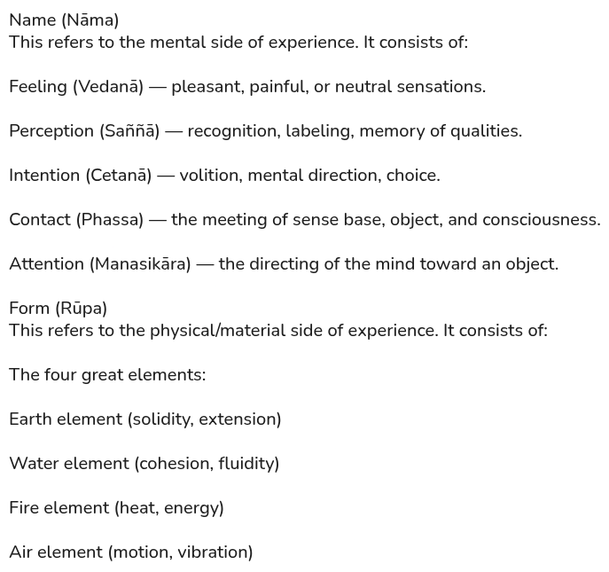
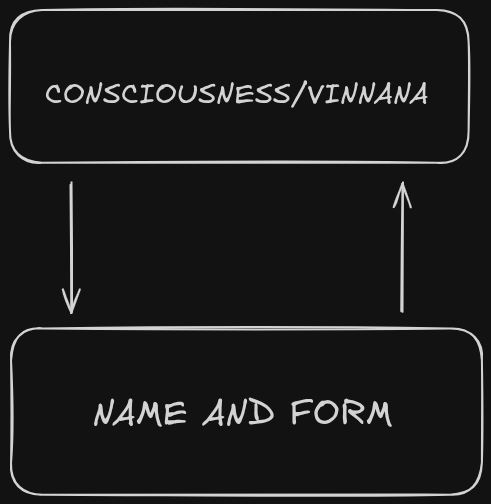

Kernel Teachings of the Buddha
The Four Noble Truths
The Buddha began his teaching with the Four Noble Truths, which form the foundation of the path:
- The Truth of Unsatisfactoriness (Dukkha): All conditioned existence is marked by unsatisfactoriness. Birth, aging, illness, death, sorrow, lamentation, pain, grief, and despair are unsatisfactory. Even pleasure is unsatisfactory because it is impermanent and unreliable.
- The Truth of the Origin of Unsatisfactoriness: Craving (taṇhā) is the cause. Craving for sensual pleasures, craving for existence, and craving for non-existence drive the cycle of rebirth and perpetuate unsatisfactoriness.
- The Truth of the Cessation of Unsatisfactoriness: When craving is abandoned, unsatisfactoriness ceases. This cessation is Nibbāna, the unconditioned state beyond birth and death.
- The Truth of the Path: The Noble Eightfold Path leads to cessation. It consists of:
- Right View: Understanding the Four Noble Truths and the law of kamma; seeing dependent origination.
- Right Intention: The resolve to let go of craving (renunciation), to cultivate goodwill (non‑ill will), and to act with compassion.
- Right Speech: Abstaining from lying, divisive speech, harsh speech, and idle chatter.
- Right Action: Abstaining from killing, stealing, and sexual misconduct.
- Right Livelihood: Earning a living in a way that does not cause harm or violate the other factors of the path.
- Right Effort: Cultivating wholesome states, abandoning unwholesome ones.
- Right Mindfulness: Clear awareness of body, feelings, mind, and phenomena.
- Right Concentration: Developing meditative absorption (jhāna).
The Noble Tenfold Path
The Noble Eightfold Path is the path of the learner (sekha). When fully developed, it naturally culminates in two further factors for the arahant:
- Right Insight (sammā ñāṇa): From perfected right concentration arises direct knowing — the complete ending of ignorance, the seeing of all conditioned phenomena as they arise and vanish, and the final severing of the remaining fetters.
- Right Liberation (sammā vimutti): With insight fulfilled, all craving and becoming cease without remainder. Nibbāna — the unconditioned — is realized here and now, with no further rebirth.
The Five Aggregates
The Buddha deconstructed the illusion of identity into five distinct, transient heaps (khandhas) which are falsely aggregated and clung to via identity-view.
- Form (Rūpa): The physical body and material phenomena.
- Feeling (Vedanā): Pleasant, painful, or neutral sensations.
- Perception (Saññā): Recognition and labeling of experiences.
- Fabrications (Saṅkhārā): Volitional activities, mental formations, intentions.
- Consciousness (Viññāṇa): Awareness of sensory and mental objects.
The Buddha taught that none of these aggregates are self. They are impermanent, unsatisfactory, and not to be regarded as “I” or “mine.” In SN 22.59 (Anattā-lakkhaṇa Sutta), he instructed disciples to see each aggregate as: “This is not mine, this I am not, this is not my self.”
Consciousness and Name-Form Loop


In the foundational mechanics of Dependent Origination (DN 15, SN 12.65), consciousness (viññāṇa) and name-form (nāma-rūpa) exist in a tight, reciprocal loop. Consciousness requires name-form as an objective field to land on, and name-form requires consciousness to be animated. This mutual feedback loop dismantles the view of an independent, monolithic self-entity standing outside the system.
In the Mahanidana Sutta (DN 15), the Buddha describes a closed loop that defines the limit of all language, designation, and experience. This is not a linear chain, but a mutual dependency:
- Mutual Support: Consciousness (viññāṇa) and Name-Form (nāma-rūpa) are like two sheaves of reeds leaning against each other. If one is pulled away, the other falls.
- The Sensory Result: This intersection is what allows for Contact (phassa). Without this meeting, there is no "world" to be experienced.
- The Boundary of Birth: The Buddha explicitly states that "it is only to this extent" (the meeting of consciousness and name-form) that one can be born, age, die, or be described in words.
Kamma: The Law of Intention
Kamma (Karma) is not “fate” or “cosmic justice.” It is specifically defined as Intention (Cetanā). The Buddha redefined Kamma from the ritual action of his time to the mental action of the present. In the Nibbedhika Sutta (AN 6.63), he states: “Intention, I tell you, is Kamma.” It is the “driving force” within the loop of Name-and-Form.
- Intention is Karma: Every volitional act—whether through thought, speech, or body—conditions consciousness and plants the potential for future experience.
- The Result (Vipāka): Kamma is the action; Vipāka is the result. Results are not “punishments” but the natural ripening of the quality of the original intention.
- The End of Kamma: The ultimate goal of the Path is not “good Kamma,” but the absolute cessation of kamma. Because every intention (cetanā) identically is volitional fabrication (saṅkhāra), every reactive volition acts as a processing impulse that establishes consciousness (viññāṇa) in further cycles of becoming (bhava). To terminate this generation of fuel, the practitioner utilizes mindfulness and clear comprehension (sati-sampajañña) to alter the processing of sensory data at the six sense bases (saḷāyatana). By intercepting the default reflex to grasp or reject sensory contact (phassa), the production of new kamma is aborted, preventing the activation and further accretion of the underlying latent tendencies (anusaya). This real-time defense starves the feedback loop, allowing penetrative wisdom (paññā) to permanently uproot the anusaya—effectively operationalizing "neither-dark-nor-bright kamma" (AN 4.232) to systematically dismantle the mechanism of renewal.
Anattā (Not-Self)
The Buddha’s radical insight was that there is no permanent, unchanging self. The aggregates are conditioned, impermanent, and unsatisfactory. Clinging to them as “I” or “mine” creates the illusion of self and perpetuates unsatisfactoriness. Seeing clearly that all phenomena are not-self leads to disenchantment (nibbidā), dispassion (virāga), and liberation (nibbāna).
The Protocol of Deconstruction
Across DN 22 and SN 22, the protocol for dismantling identity-view (sakkāya-diṭṭhi) requires tracking the discrete components of the processing heaps (khandhās) via three dynamic observations (anupassanā):
- Arising (Samudaya): Intercepting the specific causal dependencies, such as contact (phassa) or nutriment (āhāra), that sparks an aggregate event into existence.
- Vanishing (Vaya): Witnessing the immediate, absolute cessation of that data point with zero intermediate persistence.
- Arising & Vanishing (Samudayavaya): Tracking the high-speed, intermittent, flashing nature of the entire processing loop.
This is executed by abiding independent, unattached to anything in the world (anissito ca viharati, na ca kiñci loke upādiyati). By shifting focus entirely to the flicker (phenomenal oscillation) rather than the form (the conceptual narrative), the mind realizes the stream is entirely asāra (void of substance) and anattā (non-self). This precise data-parsing automatically triggers Disenchantment (nibbidā), which feeds Dispassion (virāga), culminating in the final cessation of the loop (nibbāna).
[ The Seven factors of awakening ]
The Buddha taught seven factors of awakening (bojjhaṅga): qualities that, when cultivated and balanced, overcome the hindrances, weaken the latent tendencies (anusaya), and lead directly to knowledge and liberation.
- Mindfulness (Sati): Clear awareness and recollection of the present moment, countering heedlessness and autopilot reactions.
- Investigation of Phenomena (Dhamma Vicaya): The careful discernment of experience, seeing phenomena as impermanent, unsatisfactory, and not‑self, and distinguishing wholesome from unwholesome states.
- Energy (Viriya): Persistent effort and exertion, overcoming laziness and stagnation.
- Joy (Pīti): Capacity for rapture and happiness, cooling sensual greed and dissatisfaction.
- Tranquility (Passaddhi): Serenity and calmness of mind, subduing restlessness and aversion.
- Concentration (Samādhi): The stillness, unshakeable unification of the mind that arises naturally when the five hindrances are starved.
- Equanimity (Upekkhā): Even-minded neutrality toward all conditions, eroding clinging and self-interest.
These factors support each other. Mindfulness enables investigation, investigation sustains energy, and so on, leading to liberation.
The Natural Flow of Awakening
The Buddha described awakening not as something forced by sheer willpower, but as the natural result of providing the right conditions.
- AN 11.2 (Cetanākaraṇīya Sutta): If one factor is present, the next arises naturally by law (dhammatā). Virtue leads to lack of remorse, which leads to joy, which leads to stillness, which leads to concentration.
- SN 12.23 (Upanisa Sutta): The Buddha used the simile of rain flowing down a mountain into streams, ponds, lakes, and finally the ocean. In the same way, mindfulness and investigation naturally flow toward liberation.
- Grasping as the Dam: Clinging (upādāna) blocks this natural flow. When grasping is abandoned, the mind moves toward peace without obstruction.
- Practical Insight: Noticing the aggregates as impermanent and not-self weakens the dam of identity. The mind then flows naturally into concentration and insight.
The Four Jhānas
The Buddha taught the practice of concentration leading to four stages of meditative absorption (jhāna). These are not ends in themselves but powerful supports for insight:
- First Jhāna: Seclusion from sensuality and unwholesome states. Characterized by applied and sustained thought, rapture, and pleasure born of seclusion.
- Second Jhāna: With the calming of applied and sustained thought, rapture and pleasure remain, accompanied by inner stillness and unification of mind.
- Third Jhāna: Rapture fades, leaving equanimity and mindfulness, with pleasure still present.
- Fourth Jhāna: Pure equanimity and mindfulness, with neither pleasure nor pain.
Importance for Insight
Jhāna stabilizes the mind, making it clear and concentrated. This stability allows insight into impermanence, unsatisfactoriness, and not-self. Concentration and insight work together: concentration steadies the mind, insight liberates it.
The Removal of the Fetters (Saṃyojana)
- Identity View (Sakkāya-diṭṭhi): The misconception that any of the five aggregates constitute a permanent "self."
- Doubt (Vicikicchā): Uncertainty regarding the Buddha’s map of reality and the effectiveness of the path.
- Attachment to Rites and Rituals (Sīlabbata-parāmāsa): The belief that mere external ceremonies or rules alone can lead to awakening.
- Sensual Desire (Kāmacchanda): The compulsive drive for pleasure through the six senses.
- Ill Will (Byāpāda): The mental reaction of aversion, resentment, or hostility.
- Craving for Form-Existence (Rūpa-rāga): Attachment to refined, material states of being (such as the first four Jhānas).
- Craving for Formless-Existence (Arūpa-rāga): Attachment to the subtle, non-physical states of consciousness.
- Conceit (Māna): The deep-seated, reflexive "I am" comparison—the subtle "scent" of self.
- Restlessness (Uddhacca): The final, subtle agitation or "flicker" within the mind.
- Ignorance (Avijjā): The fundamental failure to see the Four Noble Truths in every moment.
[ Anusaya (Latent Tendencies) ]
The Buddha described anusaya as the deep underlying tendencies that remain dormant in the mind until conditions awaken them. They are not active volitions (saṅkhāra), but hidden seeds that fuel future craving and clinging.
The seven anusaya are:
- Sensual lust (kāmarāga)
- Aversion (paṭigha)
- Views (diṭṭhi)
- Doubt (vicikicchā)
- Conceit (māna)
- Craving for becoming (bhavarāga)
- Ignorance (avijjā)
What they do: They lie beneath the surface, shaping perception and reaction.
What they help explain: Why defilements re‑emerge even after temporary suppression, and why deep practice is needed to uproot them.
When the anusaya are fully uprooted, the mind no longer inclines toward craving or ignorance — this is arahantship.
The Stages of Release
- Stream-entry (Sotāpatti): Completely severs the first three fetters. The illusion of a solid "I" is shattered.
- Once-return (Sakadāgāmitā): Significantly weakens the 4th and 5th fetters (sensual desire and ill will).
- Non-return (Anāgāmitā): Fully eliminates the 4th and 5th fetters; the mind is no longer capable of being pulled by lust or pushed by anger.
- Arahantship: Eradicates the remaining five "higher" fetters (6–10). The root of ignorance is pulled up, and the cycle of rebirth ceases permanently.
Together, these teachings form a coherent path: understanding unsatisfactoriness, seeing through the aggregates, realizing not-self, and cultivating concentration and insight to reach Nibbāna.